“Jarrod and his team did a fantastic job at my house very satisfied with the results and how professional he is , would highly recommend this company”
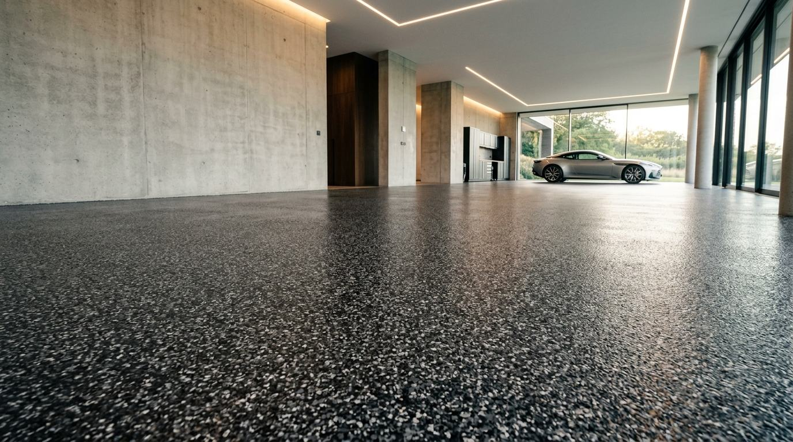
Forster · Taree · Mid North Coast
Epoxy floors don't fail.
Poor preparation does.
Floor Candy installs properly prepared garage floors, driveways and concrete coatings across Forster, Taree and the Mid North Coast, with selected projects completed across Newcastle, Maitland and Sydney. Every slab is mechanically prepared before coating for a finish built to last.
5.0 from 3 Google reviews
Owner-led · Free on-site assessment · Fixed price in writing
- Owner-led
- Jarrod quotes the work, sets the preparation standard and signs it off.
- Free on-site assessment
- We look at your actual slab, then put the scope and the price in writing.
- Mechanically prepared concrete
- Diamond grinding and industrial dust extraction on every floor — never an acid etch.
- Fixed scope and price in writing
- An itemised number before you commit, not a range that moves on the day.
- You inspect before you pay
- Walk the finished floor with us before the balance is due.
Our own work
The same slab, before and after.
Drag the handle. Two Floor Candy jobs — a driveway shot from the kerb, and a garage shot from the roller door. Same property, same angle, photographed before we started and after we finished.

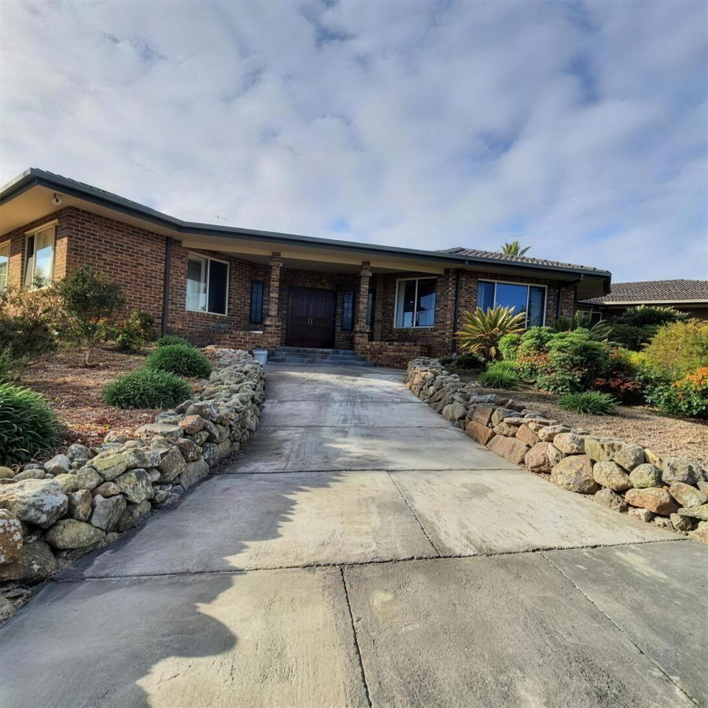
Driveway — resurfaced and sealed
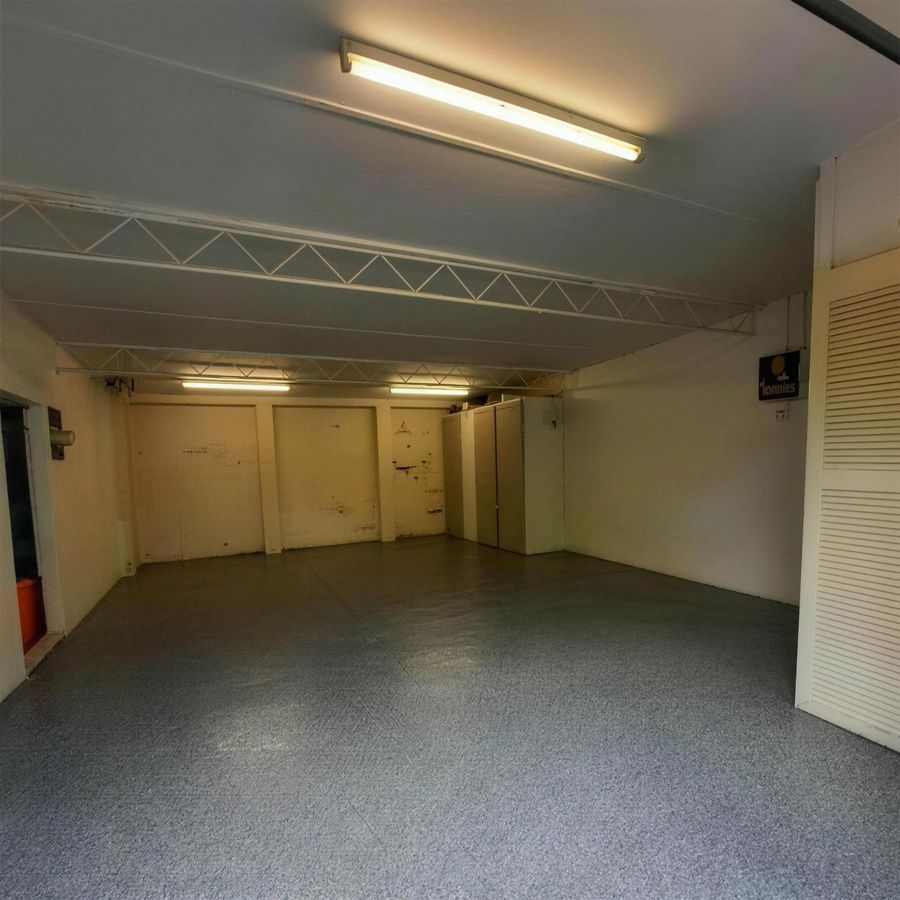
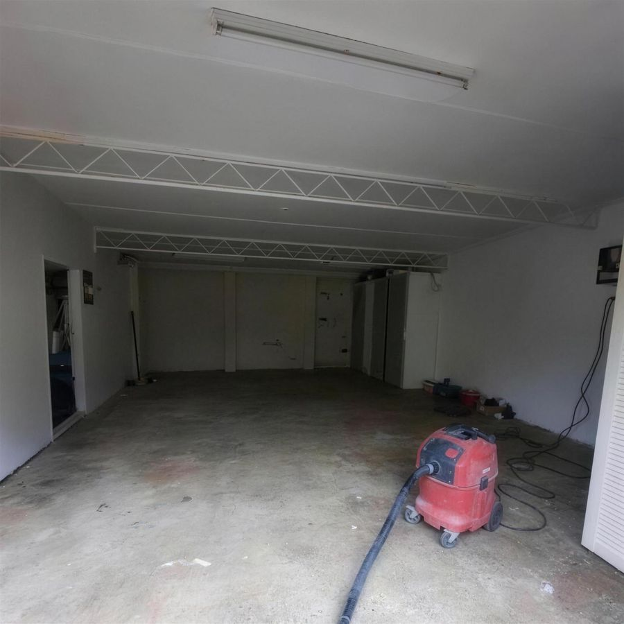
Garage — full flake broadcast
Both pairs are the same floor on two different days. We haven't staged a comparison, brightened the "after", or used anyone else's job.
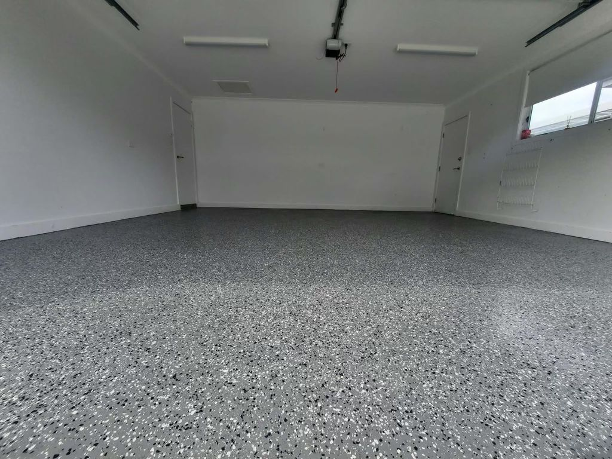
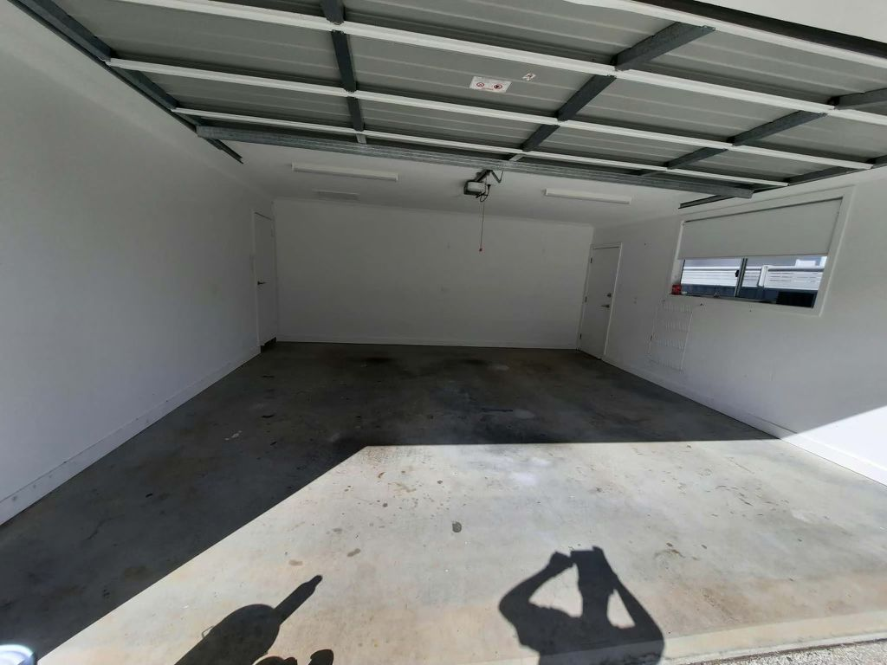
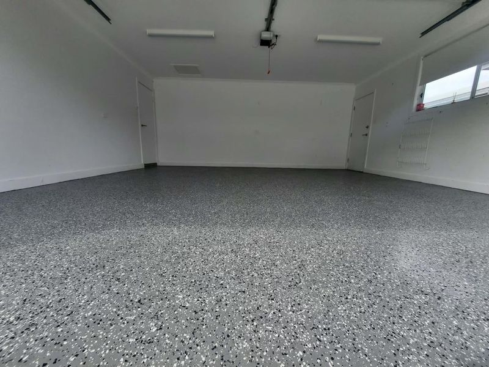
Featured project
Garage Epoxy Flooring Transformation
Bare, stained slab to a full grey flake epoxy floor — the same garage, photographed from the same end of the room before and after.
The concrete in the first frame is doing what an uncoated garage slab always does: absorbing oil, holding moisture marks where the car sat, and shedding fine grit every time it is swept. It was mechanically prepared before anything went down, then coated and finished with a full flake broadcast.
Flake is the finish we recommend most often for garages. It hides the marks a working garage collects, gives noticeably more grip underfoot than a smooth gloss, and takes hot tyres without the pickup you get from a poorly bonded coating.
Why floors fail
A cheap floor costs more the second time.
Nearly every failure people describe traces back to one thing: the slab was never properly prepared. Coating over a sealed, contaminated or unground surface is why floors lift in sheets, peel at the tyre tracks, or chip off in coin-sized pieces a season later.
Preparation is most of the labour and almost none of what you can see afterwards. It is also the first thing quietly cut when a quote gets sharpened — which is exactly why the cheapest number in your inbox is usually the one that comes back.
Lifting & peeling
The coating never keyed into the concrete. Usually acid etching instead of mechanical grinding, or a slab that was still contaminated.
Hot-tyre pickup
Warm tyres soften a weakly bonded coating and lift it off in patches, right where you park.
Yellowing
Direct sun on a topcoat never intended for UV exposure. Common on driveways and roller-door thresholds.
Bubbling & patchiness
Moisture moving up through the slab, or product applied outside its conditions. Both are assessment problems, not bad luck.
Dusting
A weak surface layer left in place. It keeps shedding fine grit no matter how often the floor is swept.
How we do it
Three days of work you'll never see.
The finish takes hours. Everything that makes it last happens before it.
We read the slab
On site, free. Cracks, contamination, existing coatings, potential moisture concerns, and how the space actually gets used — parked on, walked on, hosed down.
We grind it back
Diamond grinding removes the weak surface layer and profiles the concrete so the system can key in. Industrial extraction keeps the dust out of the rest of the house.
We coat it and walk it with you
The system specified for your concrete goes down — primer, finish, topcoat. Then you inspect the floor before the balance is paid.
Grinding a driveway, mid-job
No cost, no obligation
What you get before you spend a cent.
Jarrod comes to you, looks at the actual concrete, and leaves you with something in writing — whether or not you go ahead with us.
Takes about 30 seconds to book. We'll confirm a time that suits you.
- A written read on your slab — its condition, and what that means for the job
- The preparation and coating system specified for your concrete, in writing
- A fixed, itemised price — not a range that moves on the day
- A confirmed installation date
- Finish options you can look at in person
- An honest answer if we're not the right fit for the job
Got it — thanks.
Jarrod will call you to confirm a time for the assessment. If it's urgent, ring 0435 193 845.
What customers say
5.0
from 3 Google reviews
We're a small operation, so here are all of them, in full, exactly as they were written. We haven't cherry-picked — there is nothing to cherry-pick from.
“We had an epoxy floor installed in our shed conversion and it’s completely transformed the space. It looks great and is super easy to maintain. Jarrod was super helpful and efficient, the finish is high quality. Really happy with the result and would definitely recommend.”
“I recently had the pleasure of working with Jarred from Floor Candy and I couldn’t be happier with the results. His expertise in natural stone polishing is outstanding—he restored our stone surfaces to a beautiful, high-quality finish that…”
Shown as Google truncates it.
Rating and review count verified on the Floor Candy Google Business Profile, 10 August 2026.
Recent work
Real floors, photographed as they are.
Garage epoxy flooring transformation

Flake epoxy garage
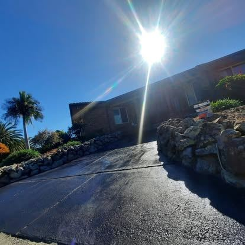
Sealed driveway
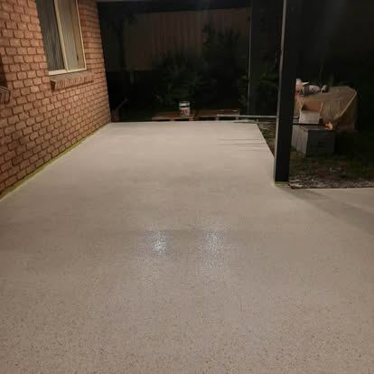
Cream flake walkway
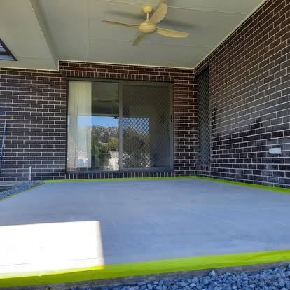
Alfresco slab

Flake, edge to edge
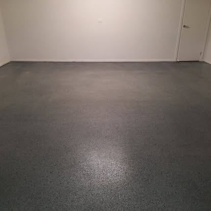
Tan flake detail

Driveway, kerb to door
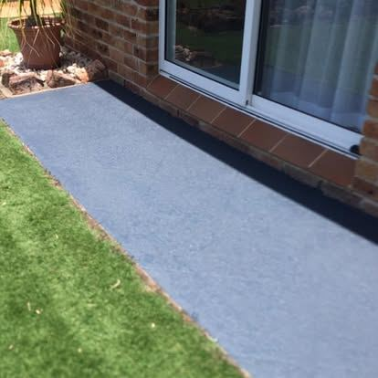
Path & surrounds
Straight answers
The questions we actually get asked.
Why not just use a kit from the hardware store?
You can, and plenty of people do. The difference is almost entirely in the preparation. A kit is applied to the slab as it is; we mechanically grind the surface back first, extract the dust, and repair what needs repairing before anything goes down.
That is why kit floors are the ones you see lifting at the tyre tracks after a season. If a DIY floor has already failed, that is a job we take on — the old coating comes off as part of the preparation.
Will it peel or lift?
Lifting is a bond problem, and bond is decided during preparation. Mechanical grinding, proper extraction, and specifying the system after we have seen the slab are how that risk is managed.
What we will not do is promise an outcome for concrete we have not inspected. If your slab has a moisture issue, we would rather tell you at the assessment than after the coating is down.
Can you fix cracks?
Cracks, chips and damaged areas are repaired where appropriate as part of the preparation. Existing or moving cracks cannot be permanently eliminated — concrete keeps moving, and anyone who tells you otherwise is overselling. We will show you which cracks are which on site.
How long before I can use the floor again?
It depends on the system specified for your slab, so we give you the actual figures for your floor at handover rather than a blanket promise here. Curing, when vehicles can go back on, and how to clean it are all covered in the handover guidance.
Is it slippery?
Texture varies by finish. A full flake broadcast has noticeably more grip underfoot than a smooth gloss, which matters most in wet areas and on exterior work. Tell us how the space is used and we will talk through the trade-off honestly at the assessment.
What does it cost?
We do not publish prices, because the honest answer depends on the slab. Size, the condition of the concrete, whether there is an existing coating to remove, access, and the finish you choose all move it.
What you get instead is a fixed, itemised price in writing after we have seen the floor — not a range that changes on the day.
When do I pay?
You receive a written scope and quote before committing to anything. A booking deposit may be required to secure your date and order materials. Every project finishes with a final walkthrough, so you can inspect the completed surface before paying the remaining balance.
Do you cover my area?
Our core area is Forster, Taree, Harrington, Blueys Beach and the surrounding Mid North Coast. That is where we work week to week, and where an assessment can usually be arranged quickly.
We also take on selected projects across Newcastle, Maitland and Sydney. Whether we can travel comes down to the size and timing of the job, so it is worth asking — the service areas page has the detail.
Where we work
Epoxy flooring across the Mid North Coast and beyond
Floor Candy primarily services Forster, Taree, Harrington, Blueys Beach and surrounding Mid North Coast communities. Selected projects are also accepted across Newcastle, Maitland and Sydney.
Floor Candy is a mobile business — we work at your property. There is no public showroom to visit.
Primary service areas
- Forster Garages, driveways, alfresco and interior concrete
- Taree Garages, driveways, sheds and workshop floors
- Harrington Coastal garages, patios and paths
- Blueys Beach Holiday-home garages and outdoor concrete
- Mid North Coast Surrounding towns and villages — ask about yours
Projects further afield
- Newcastle Suitable projects considered
- Maitland Suitable projects considered
- Sydney Suitable projects considered
Travel outside the Mid North Coast depends on the size and timing of the job. The quickest way to find out is to ask.
Forster · Taree · Mid North Coast
Start with the slab.
Book a free on-site assessment and find out what your concrete actually needs — before anyone quotes you a number.
Costs nothing. No obligation. Mon–Fri, 7am–7pm.